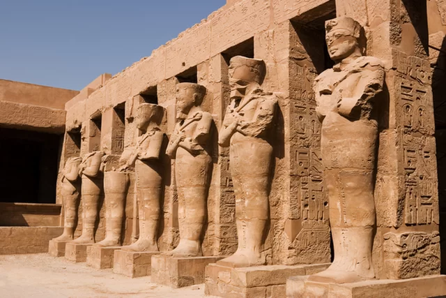
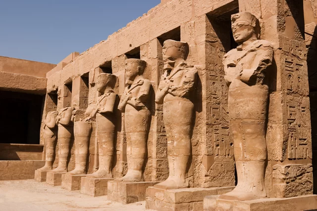
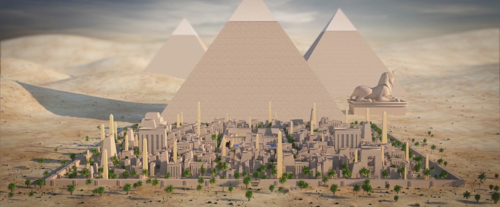

GRADOVI
U Egiptu nisu postojali gradovi kakvi su postojali u drevnoj Mezopotamiji i onakvi kako mi zamišljamo grad jer je stanovništvo zbog izvrsnog navodnjavanja bilo apsolutno raspršeno po cijelom toku rijeke Nil. Egipatski gradovi su otvoreni, nemaju zidina, a prostorno su organizirani u odnosu prema Nilu, tako da ulice mijenjaju smjer kako rijeka zakreće. Društvene zgrade (hramovi, kraljevske palače, državni uredi itd.) nisu bile koncentrirane na jednom mjestu već razasute po cijelom gradu. Ostale građevine (npr. stambene kuće ili naseobine radnika-graditelja) bile su pravokutnih oblika, napravljene od mulja i trstike i imale su hipostilno osvjetljenje (uzdignuti središnji dio kako bi bio više osvijetljen).
PIRAMIDE
Egipatska umjetnost je od početka obilježena smrću, tj. obredima koji prate odlazak faraona na drugi svijet. Tako je i egipatska arhitektura služila uglavnom veličanju bogova i pokojnog faraona kojima su podizani hramovi i grobnice. Faraonovi posmrtni ostaci, mumificirani i položeni u sarkofag smještani su u golemu grobnicu koja je neka vrsta pročišćivača na njegovom putu u vječnost. Prve grobnice nazivaju se mastabe (arapski: "klupa"); to su grobnice pravokutne osnove, napravljene od cigli ili kamena, a sastoje se od tzv. bunara (koji se nalazi u sredini objekta i služi za smještaj sarkofaga koji bi se zatrpao kamenjem) i kapele (koja je bila u visini zemlje i služila je za pogrebne darove. Tipično za mastabu starog carstva su tzv. lažna vrata koja pokazuju pokojnika. Ona su ograničena stupovima i arhitravom (gredom na dva stupa). Prema važnosti hrama vrata su bila različite veličine, od 50 cm pa dalje.
Evolucijom mastabe došlo je do izgradnje tzv. stepenastih piramida od kojih je najznačajnija ona faraona Džozera iz 3. dinastije (Staro Carstvo). U Sakari na mjestu stare mastabe u koju su se sahranjivale kraljica i kraljevska djeca nije bilo dovoljno mjesta za faraona Džozera, pa je Imhotep, prvi poznati arhitekt, povećao osnovu od kvadrata u pravokutnik i na nju dodao još 4 terase - platforme, a kasnije još dvije. Pretpostavlja se da je ovakva simbolika koja vodi stepenasto prema nebu trebala olakšati uzlet duše pokojnika prema vrhovnom bogu suncu - Ra. Džozerov kompleks, pored piramide, sadržavao je ulaznu kapiju, trijem, kapele i sve je bilo opasano velikim zidom.
Naziv piramide potječe iz grčkog jezika i znači kolač od žita, vjerojatno su stoga piramide u Bibliji nazvane egipatskim žitnicama. Neke piramide nisu nikad bile korištene kao grobnica vladara, jedna teorija smatra da su te piramide bile samo nadgrobni spomenici. Faraon Snofru, prvi vladar 4. dinastije, zapovjedio je izgradnju Crvene piramide nakon što su mu radnici sagradili raniju, Savijenu piramidu, koja je bila velika pogreška jer nije ispala savršena. Najpoznatiji kompleks piramida je pored Gize, faraona Kufua, Kafre i Menkaure (4. dinastija). Najstarija i najveća je Keopsova piramida (230 x 148 m), pored nje su 3 manje oštećene. Monumentalni volumen piramide je jako zatvoren, gotovo puno geometrijsko tijelo ravnih stranica. Na površini bilo je oklopljeno najglatkijim pločama koje su reflektirale svjetlo i u golemom prostranstvu pustinje odavale istinski zapanjujući dojam na promatrača. U unutrašnjosti, piramida se sastoji od uskih mračnih hodnika koji vode do glavne faraonove grobne komore koja je, u odnosu na monumentalni volumen zida piramide, jako mala (10 x 5 x 5 m). Od glavne sobe nalazi se niz prostorija različitih vjerskih namjena, a zanimljiv je i maleni tunel za zrak koji gleda na zviježđe Orion, jedinu nepokretnu točku na noćnom nebu koje se ne miče i koje je vjerojatno služilo kao orijentacija pri gradnji. Plan svake piramide je drugačiji, samo je ulaz uvijek na sjevernoj strani. Druga piramida je Keopsovog sina Kefrena, a treća, najmanja, Kefrenovog sina Mikerina.
HRAMOVI
Ispred svake od navedenih piramida nalazi se kompleks hramova, od Hrama u dolini, pored Nila, polazi strma uzlazna cesta te vodi do hrama mrtvih neposredno smještenog ispred piramide, a piramidu smatramo monumentalnim završetkom cijelog kompleksa. Hram u dolini i hram mrtvih obično se sastojao od ulaza s pilonima (zidovi u obliku krnjih piramida), hodnika, jedne ili dvije hipostilne dvorane (dvorane sa stupovima, grč. hipo = više, stil = stup), dvorišta sa statuama i jednom ili više kapela. Na ovaj način gradit će se skoro svi egipatski hramovi.
Takav je i Amonov hram u Karnaku koji je građen od XII. dinastije (Srednje egipatsko kraljevstvo) do Ptolomeja (XXX. dinastija), oko tisuću pet stotina godina. Sam hram dug je 355 m, a do njega vodi aleja sfingi dugačka 400 i široka 20 m. Započinje pilonima, nastavlja se hipostilnom dvoranom i središnjom dvoranom sa svetištem. Pravocrtni hod od portala, kroz sve geometrijske prostorije, do svetišta određuje prostor hrama. Ovo je arhitektura straha, jer piloni daju lažni dojam da se na njih možemo uspeti, hipostilne dvorane sa preglomaznim stupovima su zastrašujuće i tamne, a pogled sprijeda nam stvara lažni dojam prohodnosti do svetišta kojem su mogli pristupiti samo odabrani. Pristup prvoj prostoriji bio je dozvoljen svima, hipostilnoj dvorani samo plemićima i svećenicima, svetištu samo svećenicima i faraonu, a u svečanu salu je ulazio samo faraon.
